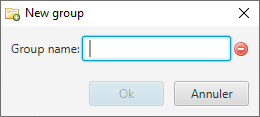

This action is available through the menu entry 'File' → 'New Group'.
As for creating a folder, creating a Group requires only to give it a name. An error may be displayed on Group creation (for instance when there is no more memory available on the token).
An icon, on the right side of field indicates if the input data is correct or not. A tooltip text is also present in case of error in order to advise the user. Here is the list of the checks performed in this dialog window: